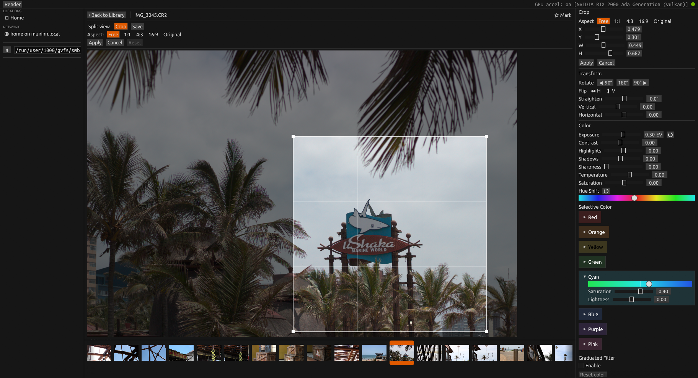

Native Desktop Photo Editor
Most photo editors are either bloated creative suites or flimsy web apps. Neither respects the simple workflow: browse a folder, tweak an image, export the result.
Photograph is a native Rust desktop photo browser and editor built for practical image management and color grading. It opens fast, handles RAW files, and stores non-destructive edits as sidecar JSON so your originals are never touched.
GitHub README • Releases • crates.io • Architecture
Download
Available as a .deb for Ubuntu and Debian-based distributions (x86-64).
Or from a terminal:
wget https://github.com/divanvisagie/Photograph/releases/download/v0.4.2/photograph_0.4.2-1_amd64.deb
sudo apt install ./photograph_0.4.2-1_amd64.deb
Upgrading: Ubuntu's App Center shows "Installed" for a newer
.deb when any version is already installed, and won't upgrade it
(app-center#2190). Install the new version with apt instead,
from the folder you downloaded it to:
sudo apt install ./photograph_0.4.2-1_amd64.debOlder versions and release notes are on the releases page.
Requires a Vulkan-capable GPU. Run vulkaninfo --summary to verify.
Or install from crates.io (Linux, Rust toolchain and the build dependencies required):
cargo install photograph
photographScreenshot

What It Does
- Folder browser with thumbnail grid; the sidebar finds mounted drives, ZFS pools, and network shares (NFS/SMB/sshfs)
- Full image viewer/editor windows (egui/eframe)
- EXIF metadata display
- Non-destructive edits stored as sidecar JSON
- Geometry: rotate, flip, crop, straighten, keystone
- Color/tone: exposure, white balance, HSL, selective color, graduated filter, highlight/shadow recovery
- Export as JPG, PNG, or WebP with quality/compression and optional resize
- Background rendering and export progress UI
Supported Formats
RAW decode via rawler: RAF, DNG, NEF, CR2, CR3, ARW.
Standard formats via the image crate: JPG, PNG, TIFF, WebP, BMP.
The browser also recognizes HEIC and AVIF extensions where decode support is available.
Development
cargo build
cargo run --bin photograph
cargo test
Live-reload dev loop (requires cargo-watch):
cargo install cargo-watch
make devPackaging
The Makefile builds a Linux .deb.
make # list all targets
make build # build the .deb
make install # build and install the .debArchitecture
Pipeline and architecture decisions are documented in detail:
License
GPL-2.0-only. See LICENSE.